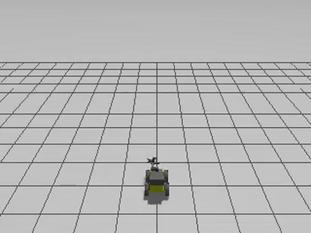

Assignments
Problem Sets
Problem sets consist of theoretical problems and programming exercises to reinforce concepts covered in lectures.
Problem Set 1
Release Date: September 3, 2025 (Wednesday, 11:00 PM)
Due Date: September 19, 2025 (Friday, 11:00 PM)
Late Due Date: September 21, 2025 (Sunday, 11:00 PM)
Weight: 10% of total grade (100 points)
Components:
- Problem_set1_writing - Theoretical problems and derivations
- Problem_set1_code - Programming implementation
Topics Covered:
- Coordinate transformations and rotation matrices
- Quaternion operations
- Robot kinematics
- Basic ROS2 programming
Problem Set 2
Release Date: October 5, 2025 (Sunday, 8:00 AM)
Due Date: October 21, 2025 (Tuesday, 11:00 PM)
Late Due Date: October 23, 2025 (Thursday, 11:00 PM)
Weight: 10% of total grade (100 points)
Topics Covered:
- Probabilistic robotics fundamentals
- Bayesian filtering
- Kalman filter derivations
- Sensor modeling
Problem Set 3
Release Date: October 29, 2025 (Wednesday, 8:00 AM)
Due Date: November 21, 2025 (Friday, 11:00 PM)
Late Due Date: November 22, 2025 (Saturday, 11:00 PM)
Weight: 10% of total grade (100 points)
Topics Covered:
- SLAM algorithms
- Path planning
- Advanced filtering techniques
- Multi-sensor fusion
Coding Exercises
Coding exercises are hands-on programming assignments where you will implement key algorithms for mobile robotics using ROS2. These assignments involve processing real sensor data and implementing state estimation algorithms.
Coding Exercise 1: Wheel Odometry and ROS2 Basics
Release Date: September 26, 2025 (Friday, 8:00 AM)
Due Date: October 18, 2025 (Saturday, Gradescope deadline 5:00 AM)
Late Due Date: October 20, 2025 (Monday, Gradescope deadline 5:00 AM)
Weight: 150 points
Components:
- Coding exercise 1 - Code implementation
- Coding exercise 1 - Report
Objectives:
- Implement wheel odometry computation from encoder data
- Create ROS2 nodes for publishing odometry messages
- Handle coordinate transformations using tf2
- Visualize robot trajectory in RViz2
Deliverables:
- Python implementation of odometry node
- Output trajectory files for autograding
- Technical report explaining your approach and results
Coding Exercise 2: IMU Integration and Sensor Fusion
Release Date: October 20, 2025 (Monday, 12:00 AM on Gradescope)
Due Date: November 9, 2025 (Sunday, 11:59 PM)
Late Due Date: November 9, 2025 (Sunday, 11:59 PM; no late window)
Weight: 150 points (100 code + 50 report)
Components:
- coding exercise 2_code - Implementation
- coding exercise 2_report - Technical report
Objectives:
- Process IMU data (accelerometer and gyroscope)
- Implement complementary filter for orientation estimation
- Fuse wheel odometry with IMU measurements
- Handle sensor noise and drift
Deliverables:
- ROS2 node for IMU processing and fusion
- Comparison of different fusion approaches
- Analysis report with performance metrics
Coding Exercise 3: Extended Kalman Filter for GPS-IMU-Odometry Fusion
Release Date: November 7, 2025 (Friday, 8:00 AM)
Due Date: December 9, 2025 (Tuesday, 11:00 PM)
Late Due Date: December 9, 2025 (Tuesday, 11:00 PM; no late window)
Weight: 200 points (150 code + 50 report on Gradescope)
Components:
- Coding exercise 3 code - EKF implementation
- Coding exercise 3 report - Analysis and results
Objectives:
- Implement Extended Kalman Filter (EKF)
- Fuse GPS, IMU, and wheel odometry data
- Handle asynchronous sensor measurements
- Tune process and measurement noise parameters
- Evaluate localization accuracy
Deliverables:
- Complete EKF implementation in ROS2
- Trajectory comparison with ground truth
- Comprehensive report with covariance analysis
- Performance evaluation metrics
Quizzes
| Quiz | Date | Format | Topics | Points |
|---|---|---|---|---|
| Quiz 1 | October 15, 2025 (Wednesday) | Canvas (20 marks) + Written (30 marks) | Modules 1-3: Intro, Math Fundamentals, Robot Dynamics | 50 |
| Quiz 2 | November 21, 2025 (Friday) - Online 24 hours | Canvas | Modules 4-5: Motion Control, Sensor Fusion | 75 |
| Quiz 3 | December 8, 2025 (Monday) - Online 24 hours | Canvas | Module 6: Localization, Mapping, SLAM | 75 |
Assignment 4: Semester-Long Simulation Project
Assignment 4: ROS2 and Gazebo Simulation Project (All Students)
Duration: Semester-long project split into two parts
Weight: 100 points (required for both 3 and 4 credit sections)
Project Overview:
All students will implement what they learn in CS498GC Mobile Robotics using Ubuntu 22.04, ROS 2 Humble, and Gazebo Simulation (the TA reference runs posted later used Ubuntu 24.04 + ROS 2 Jazzy + Gazebo Harmonic). This semester-long project allows you to apply course concepts in a practical simulation environment.
Release Date: September 3, 2025 (Wednesday)
Due Date: November 21, 2025 (Friday, 11:00 PM)
Weight: 25 points
Objective:
Deploy Husky robot with UR3 manipulator in Gazebo using ROS2 Humble
Mobile Manipulator System Configuration (13 DOF total):
- End Effector: 1-DOF parallel gripper (open/close)
- Manipulator Arm: 6-DOF (UR3 with 6 revolute joints)
- Mobile Base: 6-DOF representation in SE(3) - position (x, y, z) and orientation (quaternion: qw, qx, qy, qz)
- Note: Husky has differential drive kinematics with 3 controllable DOF (planar motion)
Deliverables Submitted on Gradescope:
- Rosbag Recording: 30-second recording of all topics from Husky base and UR3 arm
- Screen Recording: 30-second video showing mobile manipulator in ROS2 Humble, Gazebo, RViz
- 10 seconds: Teleoperation of mobile manipulator
- 20 seconds: End effector gripper actuation (open/close)
Required Resources:
- Gazebo: ROS2 Gazebo Tutorial
- Husky Platform: Repository | Documentation
- UR3 Manipulator: ROS2 Driver with MoveIt 2
Quick Test Commands:
# Install packages
sudo apt install ros-${ROS_DISTRO}-ros-gz ros-${ROS_DISTRO}-slam-toolbox ros-${ROS_DISTRO}-navigation2 ros-${ROS_DISTRO}-nav2-bringup
# Test Husky+UR3
# (TA reference setup, not public: husky_ur3_gazebo comes from the TA's ROS 2 Jazzy workspace; the public husky_ur3_simulator is ROS 1 Noetic)
ros2 launch husky_ur3_gazebo simulation.launch.py world:=empty.sdf
# Test UR3
ros2 launch ur_description view_ur.launch.py ur_type:=ur3
# Diagnostics
ros2 doctor --report
Technical Challenges to Expect:
- Dependency conflicts between 20+ ROS packages
- NVIDIA driver compatibility issues
- Environment sourcing in new terminals
- Python version mismatches
Reference Implementation: ROS1 to ROS2 adaptation
Husky+UR3 Repository: Husky + UR3 Mobile Manipulator Simulator
TA Reference Runs (DGX Spark, ROS 2 Jazzy + Gazebo Harmonic, recorded July 2026):
TA reference runs, not student submissions

Part A: Husky + UR3 scripted base drive, forward then an in-place turn (sped up) Part B: SLAM Toolbox occupancy map growing (rendered from the run's rosbag)
Part B: SLAM Toolbox occupancy map growing (rendered from the run's rosbag)
All TA reference runs, with captions and key numbers: SLAM-ing Mars page.
Release Date: October 29, 2025 (Wednesday; opened on Gradescope at 4:45 PM)
Due Date: December 9, 2025 (Tuesday, 11:00 PM)
Weight: 75 points (+10 Mars Challenge bonus)
(original Fall 2025 figures, superseded by rubric v11 of December 8, 2025: optional extra credit with up to +35 bonus points; the two v11 builds list 175 points due Dec 15 and 75 points due Dec 10)
Core Requirements:
- Sensor Fusion / EKF (15 pts): EKF implementation for state estimation
- Path Planning (A*/RRT* + DWA) (15 pts): Global planning with obstacle avoidance
- 2D SLAM (10 pts): 2D mapping with laser scanner
- Full-System Integration (25 pts): Complete autonomous demo
- Technical Report, RSS format (10 pts): RSS format technical paper
Mars Environment Bonus (+10 pts):
- Complete tasks in Mars terrain
- Navigate reduced traction surface
- Optional: Race track challenge!
Key Resources:
Key Technologies:
- Software Stack: Ubuntu 22.04 + ROS 2 Humble + Gazebo Simulation (TA reference runs used Ubuntu 24.04 + ROS 2 Jazzy + Gazebo Harmonic)
- Programming: Python or C++
- Visualization: RViz2, PlotJuggler
Extra Credit Opportunities
Additional Points Available:
In Fall 2025, extra credit was offered for Quizzes 2 and 3 and for Assignment 4.
Quiz 2 & 3 Extra Credit
Quiz 2 Extra Credit:
- Due: November 21, 2025 @ 11:00 PM
- Points: 5-7 points per question
- Format: PDF submission with TA-proof quality solutions
Quiz 3 Extra Credit:
- Due: December 9, 2025 @ 11:00 PM
- Points: 5-7 points per question
- Format: PDF submission with detailed explanations
📄 Full Guide: Detailed Quiz 2/3 Extra Credit Guide
Assignment 4 Extra Credit
Early Submission Bonus Points:
- +20 points if Part A is submitted before November 9, 2025
- +10 points if Part A is submitted before November 14, 2025
- (as posted in the November 2025 extra-credit guide; the first rubric v11 build (175 points) listed early-submission tiers of Gold +25 before November 7 and Silver +20 before November 9)
- Regular deadline: Fri Nov 21 (Part A), Tue Dec 9 (Part B)
🎯 Advanced Extra Credit Options (50 points each)
Deadline: December 9, 2025 (Tuesday) @ 11:00 PM
Option A: RTAB-Map 3D SLAM (50 points)
- Implement RTAB-Map visual SLAM on Husky mobile manipulator
- Create 3D reconstruction of environment
- Demonstrate loop closure detection
- 📄 Full RTAB-Map Requirements (not available)
Option B: SAMWISE Text-Driven Segmentation (50 points)
- Integrate SAMWISE (CVPR 2025) for natural language object queries
- Implement text-driven manipulation tasks
- Real-time video segmentation with temporal reasoning
- 📄 Full SAMWISE Requirements (not available)
Mars Challenge Bonus:
- Points: +10 points for Part B
- Tasks: Complete SLAM in Mars terrain
- Challenge: Navigate reduced traction surface
Note: You may complete both RTAB-Map and SAMWISE options for a total of 100 extra credit points!
📄 Summary: Complete Extra Credit Options Guide (not available)
📄 Original Guide: Assignment 4 Extra Credit Guide
📄 Demo Slides: Assignment 4 Part A Demo Presentation
Submission Guidelines
Important Policies:
- All assignments were submitted through Gradescope
- Code submissions should include all necessary files to reproduce results
- Reports should be in PDF format with clear explanations and figures
- Late Policy: One assignment can be 2 days late without penalty. After that, 20% per day
- Academic integrity: All work must be your own. Cite any external resources used